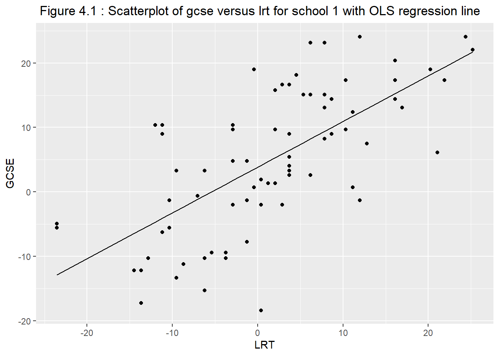
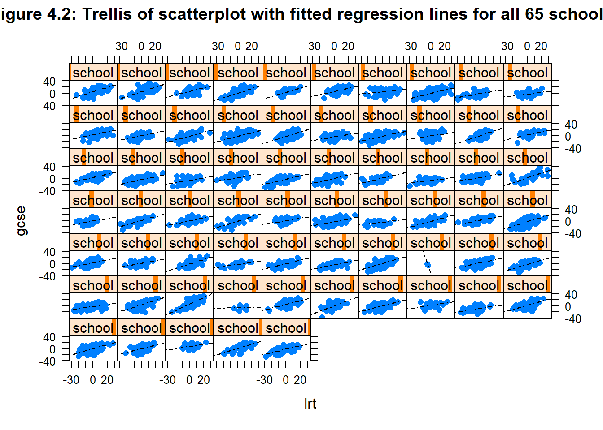
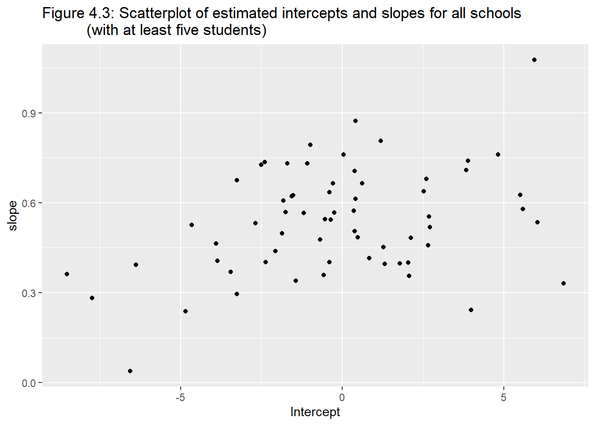

In this chapter, we include random coefficients or random slops in addition to random intercepts, thus also allowing the effects of covariates to vary between clusters. Such model involving both random intercepts and random slopes are often call random-coefficient models.
How effective are different schools?(4.2)
Here we analyze a dataset on inner-london schools. At age 16, students took their Graduate Certificate of Secondary Education(GCSE) exams in a number of subjects. A score was derived from the individual exam results. Such scores often form the basis for school comparisons, for instance, to allow parents to choose the best school for their child. However, schools can differ considerably in their intake achievement levels. It may be argued that what should be compared is the “value added”; that is, the difference in mean GCSE score between schools after controlling for the students’ achievement before entering the school. once such measure of prior achievement is the London Reading Test(LRT) take by these students at age 11.
The dataset gcse.dta has the following variables:
school: school identifier
student: student identifier
gcse: Graduate Certificate of Secondary Education (GCSE) score (z score, multiplied by 10)
lrt: London Reading Test(LRT) score (z score, multiplied by 10)
girl : dummy variable for student being a girl (1: girl; 0: boys)
schgend: type of school (1: mixed gender; 2: boys only; 3: girls only)
We have following objectives to investigate from the data set.
To investigate the relationship between GCSE and LRT .
How the relationship between GCSE and LRT varies between schools.
Also we can address questions like, which schools appear to be most effective, taking prior achievement into account.
Let us have a look at the data set.
# Let us get the GCSE data loaded in Rdf <-read_dta("gcse.dta")# let us have a look at the data.head(df)
Before developing a model for all 65 schools combined, we consider a separate model for each school. For school \(j\), an obvious model for the relationship between GCSE and LRT is a simple regression model,
Where; \(y_{ij}\) : GCSE score for the ith student in the school j.
\(x_{ij}\) : Corresponding LRT score.
\(\beta_{1j}\) : The school specific intercept.
\(\beta_{2j}\) : The school specific slope.
\(\epsilon_{ij}\) : Residual error term with school-specific variance \(\theta_j\)
For school 1, OLS estimates of the intercept \(\widehat{\beta}_{11}\) and the slope \(\widehat{\beta}_{21}\) can be obtained by using lm() function in R.
# Regression model considering `gcse` as dependent variable and `lrt` as independent variable for school 1.# We can estimate the model directly. model_1<-lm( gcse ~ lrt, data =subset(df, school ==1) # Here, we are sub-setting the data for only school 1. )# Estimates from model 1. summary(model_1)
Call:
lm(formula = gcse ~ lrt, data = subset(df, school == 1))
Residuals:
Min 1Q Median 3Q Max
-22.488 -5.443 -1.018 6.193 15.469
Coefficients:
Estimate Std. Error t value Pr(>|t|)
(Intercept) 3.83330 0.98224 3.903 0.000214 ***
lrt 0.70934 0.09201 7.710 5.77e-11 ***
---
Signif. codes: 0 '***' 0.001 '**' 0.01 '*' 0.05 '.' 0.1 ' ' 1
Residual standard error: 8.29 on 71 degrees of freedom
Multiple R-squared: 0.4557, Adjusted R-squared: 0.448
F-statistic: 59.44 on 1 and 71 DF, p-value: 5.771e-11
In the previous code, we took the subset within the lm() function. We can also first subset the data for school 1, and then use the lm() function.
# We can also take a subset from the gcse data for school 1. df_1<-subset(df, school ==1)# The estimate the model from the subset data. The results will be the samemodel_2 <-lm( gcse ~ lrt, data = df_1)# Estimates from model 2. summary(model_2)
Call:
lm(formula = gcse ~ lrt, data = df_1)
Residuals:
Min 1Q Median 3Q Max
-22.488 -5.443 -1.018 6.193 15.469
Coefficients:
Estimate Std. Error t value Pr(>|t|)
(Intercept) 3.83330 0.98224 3.903 0.000214 ***
lrt 0.70934 0.09201 7.710 5.77e-11 ***
---
Signif. codes: 0 '***' 0.001 '**' 0.01 '*' 0.05 '.' 0.1 ' ' 1
Residual standard error: 8.29 on 71 degrees of freedom
Multiple R-squared: 0.4557, Adjusted R-squared: 0.448
F-statistic: 59.44 on 1 and 71 DF, p-value: 5.771e-11
To assess whether this is a reasonable model for school 1, we can obtain the predicted (OLS) regression line for this school (with \(j\) = 1). The predicted schores are already estimated by the lm() function, and we need to access the predicted value.
Let us access and store the predicted values from model_2.
# Fitted.values calculated by the `lm()` function are the predicted values for the dependendent variables. # let us store the predicted gcse scores for school 1 as pred_gcse variable in the subset data for school 1. df_1$pred_gcse <- model_2$fitted.values# Now let us draw a scatterplot for observed and predicted gcse values for school 1. ggplot(df_1, aes(x = lrt, y = gcse)) +geom_point() +geom_line(color ="black", data=df_1, aes(x=lrt, y = pred_gcse) )+labs(title =" Figure 4.1 : Scatterplot of gcse versus lrt for school 1 with OLS regression line",x ="LRT",y="GCSE" )

We can also produce trellis graph containing such plots for all 65 schools. To draw trellis graph we may use the lattice R-package.
# Trellis graph using lattice R-package. lattice::xyplot(gcse ~ lrt| school,df,panel =function(x,y){panel.xyplot(x,y, pch =16)panel.lmline(x,y, lty =4) }, as.table = T, main ="Figure 4.2: Trellis of scatterplot with fitted regression lines for all 65 schools")

We will now fit a simple linear regression model for each school. First, we create a data set that contains only schools with 5 or more students. To do so, we create a data set df_2, and count number of students for each school using count() function.
# Counting number of students for each school, and sub-setting the data set for schools with 5 or more students. df_2<- df %>%group_by(school) %>%# Count: number of student for each schoolmutate( Count =n()) %>%ungroup() %>%subset(Count >=5)head(df_2)
Let us explore the intercept and the slops for each school.
# Scatterplot of the OLS estimates of the intercept and slope for each school.ggplot(df_3, aes(x= intercept, y = slope))+geom_point()+labs(title="Figure 4.3: Scatterplot of estimated intercepts and slopes for all schools (with at least five students)", x ="Intercept", y="slope" )

We see that there is considerable variability between the estimated intercept and slopes of different schools. To investigate this further we obtain summary statistics for intercept and slopes.
# Summary statistics of intercepts and slopes.# Calculating summaries for interceptsdf_4<- df_3 %>%summarize(Obs=n(), Mean =mean(intercept, na.rm=T), Std.dev. =sd(intercept, na.rm=T), Min =min(intercept), Max =max(intercept) )# Calculating summaries for slopedf_5<- df_3 %>%summarize(Obs=n(), Mean =mean(slope, na.rm=T), Std.dev. =sd(slope, na.rm=T), Min =min(slope), Max =max(slope) )# Combining summary statisticssum<-as.data.frame(rbind(df_4,df_5))row.names(sum) <-c("intercept", "slope")sum
Obs Mean Std.dev. Min Max
intercept 64 -0.1805974 3.2913568 -8.51925311 6.838715
slope 64 0.5390514 0.1766135 0.03809654 1.076979
To allow comparison with the parameter estimates obtained from the random-coefficient model considered later on, we also obtain the covaraince matrix of the estimated intercepts and slopes.
# We can easily calculate variance covariance matrix by `cov()` function. var_cov<-cov(df_3[,-1]) # we are ignoring the school variable in the first columnknitr::kable(var_cov)
intercept
slope
intercept
10.8330293
0.2086222
slope
0.2086222
0.0311923
We can also obtain spaghetti plot of the predicted school-specific regression lines for all school. To do so, let us merge the intercept-slope data with the original data set.
# Merging intercept and slop values in original data set by school. # We can easily use `merge()` function to do so. df_6<-merge(df, df_3, by ="school")head(df_6)
We can use ggplot() function to create the spaghetti plot of OLS regression lines for all schools.
ggplot(data=df_7, aes(x= lrt, y = pred, group = school)) +geom_line()+labs(title ="Figure 4.4: Spaghetti plot of ordinary least-square regression line for schools with at least five students",x ="LRT", y="Fitted regression line")
The model is a special case of the random-coefficient model with \(\zeta_{2j}=0\) or, equivalently, with zero random-slope variance and zero random-intercept and random-slope covaraince, \(\psi_{22}= \psi_{21} =0\)
ML estimates for the random-intercept model can be obtained using lmer() R-function.
# Let us estimate the random intercept model# The model is stored in mod3. model_3 <-lmer(gcse ~ lrt + (1|school), data= df, REML=FALSE )summary(model_3)
Linear mixed model fit by maximum likelihood . t-tests use Satterthwaite's
method [lmerModLmerTest]
Formula: gcse ~ lrt + (1 | school)
Data: df
AIC BIC logLik deviance df.resid
28057.6 28082.8 -14024.8 28049.6 4055
Scaled residuals:
Min 1Q Median 3Q Max
-3.7162 -0.6304 0.0287 0.6844 3.2680
Random effects:
Groups Name Variance Std.Dev.
school (Intercept) 9.213 3.035
Residual 56.573 7.521
Number of obs: 4059, groups: school, 65
Fixed effects:
Estimate Std. Error df t value Pr(>|t|)
(Intercept) 2.387e-02 4.002e-01 6.166e+01 0.06 0.953
lrt 5.634e-01 1.247e-02 4.052e+03 45.20 <2e-16 ***
---
Signif. codes: 0 '***' 0.001 '**' 0.01 '*' 0.05 '.' 0.1 ' ' 1
Correlation of Fixed Effects:
(Intr)
lrt 0.008
Estimation of Random-coefficient model (4.5.2)
We now relax the assumption that the school-specific regression lines are parallel by introducing random school-specific slopes \(\beta_2 + \zeta_{2j}\) of lrt:
# Random coefficient model model_4<-lmer(gcse~ lrt+(lrt|school), data =df, REML=FALSE )summary(model_4)
Linear mixed model fit by maximum likelihood . t-tests use Satterthwaite's
method [lmerModLmerTest]
Formula: gcse ~ lrt + (lrt | school)
Data: df
AIC BIC logLik deviance df.resid
28021.2 28059.1 -14004.6 28009.2 4053
Scaled residuals:
Min 1Q Median 3Q Max
-3.8312 -0.6325 0.0340 0.6832 3.4561
Random effects:
Groups Name Variance Std.Dev. Corr
school (Intercept) 9.04467 3.0074
lrt 0.01453 0.1206 0.50
Residual 55.36543 7.4408
Number of obs: 4059, groups: school, 65
Fixed effects:
Estimate Std. Error df t value Pr(>|t|)
(Intercept) -0.11508 0.39783 61.57724 -0.289 0.773
lrt 0.55673 0.01994 57.14187 27.926 <2e-16 ***
---
Signif. codes: 0 '***' 0.001 '**' 0.01 '*' 0.05 '.' 0.1 ' ' 1
Correlation of Fixed Effects:
(Intr)
lrt 0.365
Testing the slope variance (4.6)
Before interpreting the parameter estimates, we may want to test whether the random slope is needed in addition to the random intercept. Specifically, we test the null hypothesis:
\(H_0: \psi_{22}=0\\ vs\\ H_a:\psi_{22}>0\)
Note that\(H_0\) is equivalent to the hypothesis that the random slopes \(\zeta_{2j}\) are all 0. The null hypothesis also implies that \(\psi_{21}=0\) , because a variable that does not vary also does not covary with other variables. Setting \(\psi_{22}=0\) and \(\psi_{21}=0\) gives the random-intercept model.
Hence, a native Likelihood-ratio test can be performed comparing mod3 and mod4.
For the purpose, we may use anova() function.
# Likelihood-Ratio test lr_test<-anova(model_3,model_4)lr_test
Assignining values to the random intercepts and slopes(4.8)
Maximum “likelihood” estimation(4.8.1)
Maximum “likelihood” estimates of the random intercepts and slopes can be obtained by first predicting the total residuals \(\widehat{\epsilon}_{ij}= y_{ij}-(\widehat{\beta}_1+\widehat{\beta_2}x_{ij})\) and then fitting individual regressions of \(\widehat{\epsilon}_{ij}\) on \(x_{ij}\) for each school by OLS.
(the rest of this chapter is still under development)